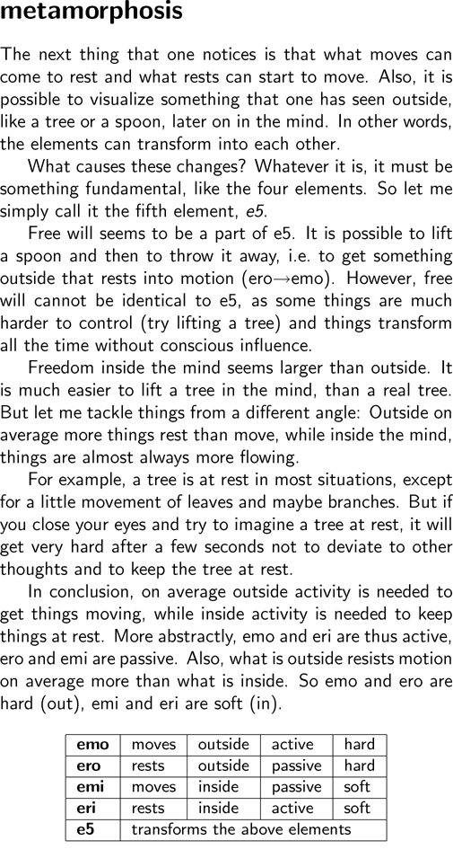
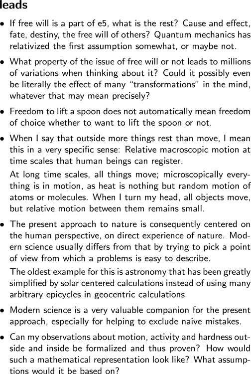

i i i i i i i i i i i i |
   metamorphosis The next thing that one notices is that what moves can come to rest and what rests can start to move. Also, it is possible to visualize something that one has seen outside, like a tree or a spoon, later on in the mind. In other words, the elements can transform into each other. What causes these changes? Whatever it is, it must be something fundamental, like the four elements. So let me simply call it the fifth element, e5. Free will seems to be a part of e5. It is possible to lift a spoon and then to throw it away, i.e. to get something outside that rests into motion (ero->emo). However, free will cannot be identical to e5, as some things are much harder to control (try lifting a tree) and things transform all the time without conscious influence. Freedom inside the mind seems larger than outside. It is much easier to lift a tree in the mind, than a real tree. But let me tackle things from a different angle: Outside on average more things rest than move, while inside the mind, things are almost always more flowing. For example, a tree is at rest in most situations, except for a little movement of leaves and maybe branches. But if you close your eyes and try to imagine a tree at rest, it will get very hard after a few seconds not to deviate to other thoughts and to keep the tree at rest. In conclusion, on average outside activity is needed to get things moving, while inside activity is needed to keep things at rest. More abstractly, emo and eri are thus active, ero and emi are passive. Also, what is outside resists motion on average more than what is inside. So emo and ero are hard (out), emi and eri are soft (in). emo moves outside active hard ero rests outside passive hard emi moves inside passive soft eri rests inside active soft e5 transforms the above elements leads - If free will is a part of e5, what is the rest? Cause and effect, fate, destiny, the free will of others? Quantum mechanics has relativized the first assumption somewhat, or maybe not. - What property of the issue of free will or not leads to millions of variations when thinking about it? Could it possibly even be literally the effect of many "transformations" in the mind, whatever that may mean precisely? - Freedom to lift a spoon does not automatically mean freedom of choice whether to want to lift the spoon or not. - When I say that outside more things rest than move, I mean this in a very specific sense: Relative macroscopic motion at time scales that human beings can register. At long time scales, all things move; microscopically everything is in motion, as heat is nothing but random motion of atoms or molecules. When I turn my head, all objects move, but relative motion between them remains small. - The present approach to nature is consequently centered on the human perspective, on direct experience of nature. Modern science usually differs from that by trying to pick a point of view from which a problems is easy to describe. The oldest example for this is astronomy that has been greatly simplified by solar centered calculations instead of using many arbitrary epicycles in geocentric calculations. - Modern science is a very valuable companion for the present approach, especially for helping to exclude naive mistakes. - Can my observations about motion, activity and hardness outside and inside be formalized and thus proven? How would such a mathematical representation look like? What assumptions would it be based on? |